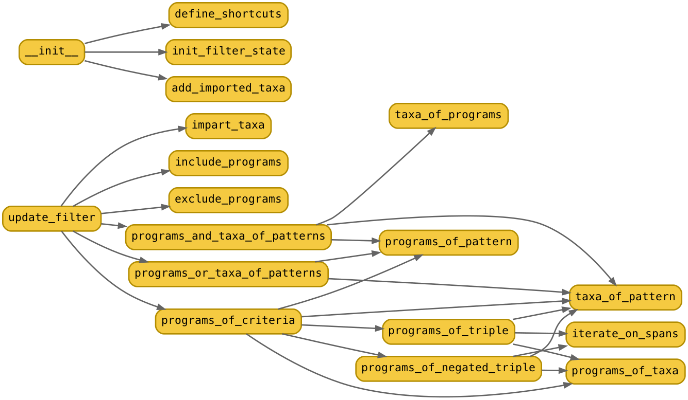

Module paroxython.filter_programs
Evolve a set of selected programs and a set of taxa representing the imparted knowledge.
The class stores the state of these two sets and provides a collection of operators to be applied
on them during the execution of the pipeline (see paroxython.recommend_programs). Two additional
sets, less important, are maintained: the programs and the taxa to be hidden during the display of
the final result.

Note
Initially, all programs in the tag database are selected. The three others sets are empty. As the filter evolves, the first set can only shrink, and the other ones only increase.
Expand source code Browse GitHub
from collections import Counter as counter
from collections import defaultdict
from itertools import permutations, product
from typing import Counter, Dict, Iterator, List, Tuple
import regex # type: ignore
from .goodies import print_warning
from .normalize_predicate import normalize_predicate
from .user_types import (
Criterion,
JsonTagDatabase,
Operation,
Predicate,
ProgramInfos,
ProgramPath,
ProgramPathSet,
ProgramToPrograms,
TaxonInfos,
TaxonName,
TaxonNameSet,
TaxaPoorSpans,
)
__pdoc__ = {
"ProgramFilter.__init__": True,
"ProgramFilter": "",
}
class ProgramFilter:
# Initialization of the filter
def __init__(self, db: JsonTagDatabase) -> None:
self.define_shortcuts(db)
self.init_filter_state()
self.add_imported_taxa()
def define_shortcuts(self, db: JsonTagDatabase) -> None:
self.db_programs: ProgramInfos = db["programs"]
self.db_taxa: TaxonInfos = db["taxa"]
self.db_importations: ProgramToPrograms = db["importations"]
self.db_exportations: ProgramToPrograms = db["exportations"]
def init_filter_state(self) -> None:
self.selected_programs: ProgramPathSet = set(self.db_programs)
self.imparted_knowledge: TaxonNameSet = set()
self.hidden_taxa: TaxonNameSet = set()
self.hidden_programs: ProgramPathSet = set()
def add_imported_taxa(self) -> None:
for (exporter, importers) in self.db_exportations.items():
exported_taxa = list(self.db_programs[exporter]["taxa"])
for exported_taxon in exported_taxa:
if exported_taxon.startswith("meta/"):
continue
for importer in importers:
importer_taxa = self.db_programs[importer]["taxa"]
if exported_taxon not in importer_taxa:
importer_taxa[exported_taxon] = []
# Get the set of taxon names or program paths matching the given pattern.
def taxa_of_pattern(self, pattern: str) -> TaxonNameSet:
match = regex.compile(fr"{pattern}\b").match
result: TaxonNameSet = set(filter(match, self.db_taxa))
if not result:
print_warning(f"the pattern '{pattern}' doesn't match any existing taxon.")
return result
def programs_of_pattern(self, pattern: str) -> ProgramPathSet:
match = regex.compile(fr"{pattern}").match
result: ProgramPathSet = set(filter(match, self.db_programs))
if not result:
print_warning(f"the pattern '{pattern}' doesn't match any existing program.")
return result
# Select programs from the taxa they feature, and vice versa.
def taxa_of_programs(self, programs: ProgramPathSet, follow: bool = False) -> TaxonNameSet:
taxa: TaxonNameSet = set()
for program in programs:
if program in self.db_programs:
for (taxon, spans) in self.db_programs[program]["taxa"].items():
if spans or follow:
# Either the taxon is featured directly or the imports must be followed.
taxa.add(taxon)
return taxa
def programs_of_taxa(self, taxa: TaxonNameSet, follow: bool = False) -> ProgramPathSet:
programs: ProgramPathSet = set()
for taxon in taxa:
programs.update(self.db_taxa.get(taxon, []))
if follow:
for program in list(programs):
programs.update(self.db_exportations[program])
return programs
# Update the state of the filter by applying set operations with the given programs or taxa.
def update_filter(
self,
criteria: List[Criterion],
operation: Operation,
quantifier: str,
) -> None:
if operation in ("impart", "hide"):
patterns = [str(criterion) for criterion in criteria]
if operation == "impart":
(program_set, taxon_set) = self.programs_and_taxa_of_patterns(patterns)
self.exclude_programs(program_set, follow=False)
self.impart_taxa(taxon_set)
else:
(program_set, taxon_set) = self.programs_or_taxa_of_patterns(patterns)
self.hidden_programs.update(program_set)
self.hidden_taxa.update(taxon_set)
else:
program_bag = self.programs_of_criteria(criteria, follow=(operation == "exclude"))
if quantifier == "all":
program_bag -= counter({program: len(criteria) - 1 for program in program_bag})
if operation == "include":
self.include_programs(set(program_bag))
else: # necessarily "exclude"
self.exclude_programs(set(program_bag), follow=True)
def programs_and_taxa_of_patterns(
self, patterns: List[str]
) -> Tuple[ProgramPathSet, TaxonNameSet]:
resulting_taxa: TaxonNameSet = set()
resulting_programs: ProgramPathSet = set()
for pattern in patterns:
if pattern.endswith(".py"):
programs = self.programs_of_pattern(pattern)
taxa = self.taxa_of_programs(programs, follow=False)
resulting_programs.update(programs)
else:
taxa = self.taxa_of_pattern(pattern)
resulting_taxa.update(taxa)
return (resulting_programs, resulting_taxa)
def programs_or_taxa_of_patterns(
self, patterns: List[str]
) -> Tuple[ProgramPathSet, TaxonNameSet]:
resulting_taxa: TaxonNameSet = set()
resulting_programs: ProgramPathSet = set()
for pattern in patterns:
if pattern.endswith(".py"):
resulting_programs.update(self.programs_of_pattern(pattern))
else:
resulting_taxa.update(self.taxa_of_pattern(pattern))
return (resulting_programs, resulting_taxa)
def programs_of_criteria(self, criteria: List[Criterion], follow: bool) -> Counter[ProgramPath]:
resulting_programs: Counter[ProgramPath] = counter()
for criterion in criteria:
if isinstance(criterion, str): # the criterion is a pattern
if criterion.endswith(".py"): # the pattern is a program pattern
programs = self.programs_of_pattern(criterion)
else: # the pattern is a label pattern
taxa = self.taxa_of_pattern(criterion)
programs = self.programs_of_taxa(taxa, follow=follow)
resulting_programs.update(programs)
elif isinstance(criterion, (list, tuple)) and len(criterion) == 3:
(pattern_1, raw_predicate, pattern_2) = criterion
(predicate, negated) = normalize_predicate(raw_predicate)
function = self.programs_of_negated_triple if negated else self.programs_of_triple
resulting_programs.update(function(pattern_1, predicate, pattern_2))
else:
print_warning(f"criterion {repr(criterion)} cannot be included or excluded.")
return resulting_programs
def impart_taxa(self, taxa: TaxonNameSet) -> None:
for taxon in taxa:
edges = taxon.split("/")
for i in range(len(edges)):
prefix = "/".join(edges[: i + 1])
self.imparted_knowledge.add(TaxonName(prefix))
def include_programs(self, programs: ProgramPathSet) -> None:
self.selected_programs.intersection_update(programs)
def exclude_programs(self, programs: ProgramPathSet, follow: bool) -> None:
self.selected_programs.difference_update(programs)
if follow:
for program in programs:
self.selected_programs.difference_update(self.db_exportations.get(program, {}))
# Deal with semantic triples of the form (taxon_pattern_1, taxon_pattern_2, predicate)
def programs_of_triple(
self,
taxon_pattern_1: str,
predicate: Predicate,
taxon_pattern_2: str,
) -> ProgramPathSet:
taxa_1 = self.taxa_of_pattern(taxon_pattern_1)
taxa_2 = self.taxa_of_pattern(taxon_pattern_2)
programs_1 = self.programs_of_taxa(taxa_1)
programs_2 = self.programs_of_taxa(taxa_2)
result: ProgramPathSet = set()
for program in programs_1 & programs_2: # for each program featuring both taxon sets
spans = self.db_programs[program]["taxa"]
for (span_1, span_2) in self.iterate_on_spans(spans, taxa_1, taxa_2):
if predicate(span_1, span_2):
result.add(program)
break
return result
def programs_of_negated_triple(
self,
taxon_pattern_1: str,
predicate: Predicate,
taxon_pattern_2: str,
) -> ProgramPathSet:
taxa_1 = self.taxa_of_pattern(taxon_pattern_1)
taxa_2 = self.taxa_of_pattern(taxon_pattern_2)
programs_1 = self.programs_of_taxa(taxa_1)
programs_2 = self.programs_of_taxa(taxa_2)
result: ProgramPathSet = programs_1 # by default, keep all programs featuring taxon_1
for program in programs_1 & programs_2: # for each program featuring both taxon sets
spans = self.db_programs[program]["taxa"]
exists_span_2_satisfying_predicate: Dict[Tuple, bool] = defaultdict(bool)
for (span_1, span_2) in self.iterate_on_spans(spans, taxa_1, taxa_2):
exists_span_2_satisfying_predicate[tuple(span_1)] |= predicate(span_1, span_2)
if all(exists_span_2_satisfying_predicate.values()):
# for any span_1, there is at least one span_2 such that predicate(span_1, span_2)
result.remove(program)
return result
def iterate_on_spans(
self, # declared as an instance method to prevent pdoc3 from misplacing its documentation.
spans: TaxaPoorSpans,
taxa_1: TaxonNameSet,
taxa_2: TaxonNameSet,
) -> Iterator:
for (taxon_1, taxon_2) in product(taxa_1, taxa_2):
if taxon_1 in spans and taxon_2 in spans:
if taxon_1 == taxon_2: # exclude diagonal from iteration
yield from permutations(spans[taxon_1], 2)
else:
yield from product(spans[taxon_1], spans[taxon_2])
# <graphviz>
# "__init__" -> "define_shortcuts"
# "__init__" -> "init_filter_state"
# "__init__" -> "add_imported_taxa"
# "init_filter_state" -> "taxa_of_programs" [style=invis]
# "update_filter" -> "programs_and_taxa_of_patterns"
# "update_filter" -> "programs_or_taxa_of_patterns"
# "programs_and_taxa_of_patterns" -> "programs_of_pattern"
# "programs_and_taxa_of_patterns" -> "taxa_of_programs"
# "programs_and_taxa_of_patterns" -> "taxa_of_pattern"
# "programs_or_taxa_of_patterns" -> "programs_of_pattern"
# "programs_or_taxa_of_patterns" -> "taxa_of_pattern"
# "update_filter" -> "programs_of_criteria"
# "programs_of_criteria" -> "programs_of_pattern"
# "programs_of_criteria" -> "programs_of_taxa"
# "programs_of_criteria" -> "taxa_of_pattern"
# "programs_of_criteria" -> "programs_of_triple"
# "programs_of_triple" -> "taxa_of_pattern"
# "programs_of_triple" -> "programs_of_taxa"
# "programs_of_triple" -> "iterate_on_spans"
# "programs_of_criteria" -> "programs_of_negated_triple"
# "programs_of_negated_triple" -> "taxa_of_pattern"
# "programs_of_negated_triple" -> "programs_of_taxa"
# "programs_of_negated_triple" -> "iterate_on_spans"
# "update_filter" -> "impart_taxa"
# "update_filter" -> "include_programs"
# "update_filter" -> "exclude_programs"
# </graphviz>Classes
class ProgramFilter-
Expand source code Browse GitHub
class ProgramFilter: # Initialization of the filter def __init__(self, db: JsonTagDatabase) -> None: self.define_shortcuts(db) self.init_filter_state() self.add_imported_taxa() def define_shortcuts(self, db: JsonTagDatabase) -> None: self.db_programs: ProgramInfos = db["programs"] self.db_taxa: TaxonInfos = db["taxa"] self.db_importations: ProgramToPrograms = db["importations"] self.db_exportations: ProgramToPrograms = db["exportations"] def init_filter_state(self) -> None: self.selected_programs: ProgramPathSet = set(self.db_programs) self.imparted_knowledge: TaxonNameSet = set() self.hidden_taxa: TaxonNameSet = set() self.hidden_programs: ProgramPathSet = set() def add_imported_taxa(self) -> None: for (exporter, importers) in self.db_exportations.items(): exported_taxa = list(self.db_programs[exporter]["taxa"]) for exported_taxon in exported_taxa: if exported_taxon.startswith("meta/"): continue for importer in importers: importer_taxa = self.db_programs[importer]["taxa"] if exported_taxon not in importer_taxa: importer_taxa[exported_taxon] = [] # Get the set of taxon names or program paths matching the given pattern. def taxa_of_pattern(self, pattern: str) -> TaxonNameSet: match = regex.compile(fr"{pattern}\b").match result: TaxonNameSet = set(filter(match, self.db_taxa)) if not result: print_warning(f"the pattern '{pattern}' doesn't match any existing taxon.") return result def programs_of_pattern(self, pattern: str) -> ProgramPathSet: match = regex.compile(fr"{pattern}").match result: ProgramPathSet = set(filter(match, self.db_programs)) if not result: print_warning(f"the pattern '{pattern}' doesn't match any existing program.") return result # Select programs from the taxa they feature, and vice versa. def taxa_of_programs(self, programs: ProgramPathSet, follow: bool = False) -> TaxonNameSet: taxa: TaxonNameSet = set() for program in programs: if program in self.db_programs: for (taxon, spans) in self.db_programs[program]["taxa"].items(): if spans or follow: # Either the taxon is featured directly or the imports must be followed. taxa.add(taxon) return taxa def programs_of_taxa(self, taxa: TaxonNameSet, follow: bool = False) -> ProgramPathSet: programs: ProgramPathSet = set() for taxon in taxa: programs.update(self.db_taxa.get(taxon, [])) if follow: for program in list(programs): programs.update(self.db_exportations[program]) return programs # Update the state of the filter by applying set operations with the given programs or taxa. def update_filter( self, criteria: List[Criterion], operation: Operation, quantifier: str, ) -> None: if operation in ("impart", "hide"): patterns = [str(criterion) for criterion in criteria] if operation == "impart": (program_set, taxon_set) = self.programs_and_taxa_of_patterns(patterns) self.exclude_programs(program_set, follow=False) self.impart_taxa(taxon_set) else: (program_set, taxon_set) = self.programs_or_taxa_of_patterns(patterns) self.hidden_programs.update(program_set) self.hidden_taxa.update(taxon_set) else: program_bag = self.programs_of_criteria(criteria, follow=(operation == "exclude")) if quantifier == "all": program_bag -= counter({program: len(criteria) - 1 for program in program_bag}) if operation == "include": self.include_programs(set(program_bag)) else: # necessarily "exclude" self.exclude_programs(set(program_bag), follow=True) def programs_and_taxa_of_patterns( self, patterns: List[str] ) -> Tuple[ProgramPathSet, TaxonNameSet]: resulting_taxa: TaxonNameSet = set() resulting_programs: ProgramPathSet = set() for pattern in patterns: if pattern.endswith(".py"): programs = self.programs_of_pattern(pattern) taxa = self.taxa_of_programs(programs, follow=False) resulting_programs.update(programs) else: taxa = self.taxa_of_pattern(pattern) resulting_taxa.update(taxa) return (resulting_programs, resulting_taxa) def programs_or_taxa_of_patterns( self, patterns: List[str] ) -> Tuple[ProgramPathSet, TaxonNameSet]: resulting_taxa: TaxonNameSet = set() resulting_programs: ProgramPathSet = set() for pattern in patterns: if pattern.endswith(".py"): resulting_programs.update(self.programs_of_pattern(pattern)) else: resulting_taxa.update(self.taxa_of_pattern(pattern)) return (resulting_programs, resulting_taxa) def programs_of_criteria(self, criteria: List[Criterion], follow: bool) -> Counter[ProgramPath]: resulting_programs: Counter[ProgramPath] = counter() for criterion in criteria: if isinstance(criterion, str): # the criterion is a pattern if criterion.endswith(".py"): # the pattern is a program pattern programs = self.programs_of_pattern(criterion) else: # the pattern is a label pattern taxa = self.taxa_of_pattern(criterion) programs = self.programs_of_taxa(taxa, follow=follow) resulting_programs.update(programs) elif isinstance(criterion, (list, tuple)) and len(criterion) == 3: (pattern_1, raw_predicate, pattern_2) = criterion (predicate, negated) = normalize_predicate(raw_predicate) function = self.programs_of_negated_triple if negated else self.programs_of_triple resulting_programs.update(function(pattern_1, predicate, pattern_2)) else: print_warning(f"criterion {repr(criterion)} cannot be included or excluded.") return resulting_programs def impart_taxa(self, taxa: TaxonNameSet) -> None: for taxon in taxa: edges = taxon.split("/") for i in range(len(edges)): prefix = "/".join(edges[: i + 1]) self.imparted_knowledge.add(TaxonName(prefix)) def include_programs(self, programs: ProgramPathSet) -> None: self.selected_programs.intersection_update(programs) def exclude_programs(self, programs: ProgramPathSet, follow: bool) -> None: self.selected_programs.difference_update(programs) if follow: for program in programs: self.selected_programs.difference_update(self.db_exportations.get(program, {})) # Deal with semantic triples of the form (taxon_pattern_1, taxon_pattern_2, predicate) def programs_of_triple( self, taxon_pattern_1: str, predicate: Predicate, taxon_pattern_2: str, ) -> ProgramPathSet: taxa_1 = self.taxa_of_pattern(taxon_pattern_1) taxa_2 = self.taxa_of_pattern(taxon_pattern_2) programs_1 = self.programs_of_taxa(taxa_1) programs_2 = self.programs_of_taxa(taxa_2) result: ProgramPathSet = set() for program in programs_1 & programs_2: # for each program featuring both taxon sets spans = self.db_programs[program]["taxa"] for (span_1, span_2) in self.iterate_on_spans(spans, taxa_1, taxa_2): if predicate(span_1, span_2): result.add(program) break return result def programs_of_negated_triple( self, taxon_pattern_1: str, predicate: Predicate, taxon_pattern_2: str, ) -> ProgramPathSet: taxa_1 = self.taxa_of_pattern(taxon_pattern_1) taxa_2 = self.taxa_of_pattern(taxon_pattern_2) programs_1 = self.programs_of_taxa(taxa_1) programs_2 = self.programs_of_taxa(taxa_2) result: ProgramPathSet = programs_1 # by default, keep all programs featuring taxon_1 for program in programs_1 & programs_2: # for each program featuring both taxon sets spans = self.db_programs[program]["taxa"] exists_span_2_satisfying_predicate: Dict[Tuple, bool] = defaultdict(bool) for (span_1, span_2) in self.iterate_on_spans(spans, taxa_1, taxa_2): exists_span_2_satisfying_predicate[tuple(span_1)] |= predicate(span_1, span_2) if all(exists_span_2_satisfying_predicate.values()): # for any span_1, there is at least one span_2 such that predicate(span_1, span_2) result.remove(program) return result def iterate_on_spans( self, # declared as an instance method to prevent pdoc3 from misplacing its documentation. spans: TaxaPoorSpans, taxa_1: TaxonNameSet, taxa_2: TaxonNameSet, ) -> Iterator: for (taxon_1, taxon_2) in product(taxa_1, taxa_2): if taxon_1 in spans and taxon_2 in spans: if taxon_1 == taxon_2: # exclude diagonal from iteration yield from permutations(spans[taxon_1], 2) else: yield from product(spans[taxon_1], spans[taxon_2])Methods
def __init__(self,
db: JsonTagDatabase
) ‑> NoneType-
Call
define_shortcuts(),init_filter_state()andadd_imported_taxa()(below).Expand source code Browse GitHub
def __init__(self, db: JsonTagDatabase) -> None: self.define_shortcuts(db) self.init_filter_state() self.add_imported_taxa() def define_shortcuts(self,
db: JsonTagDatabase
) ‑> NoneType-
Define some attributes that point directly to the main parts of the tag database.
Expand source code Browse GitHub
def define_shortcuts(self, db: JsonTagDatabase) -> None: self.db_programs: ProgramInfos = db["programs"] self.db_taxa: TaxonInfos = db["taxa"] self.db_importations: ProgramToPrograms = db["importations"] self.db_exportations: ProgramToPrograms = db["exportations"] def init_filter_state(self) ‑> NoneType-
Select all programs and define the imparted knowledge as empty.
Expand source code Browse GitHub
def init_filter_state(self) -> None: self.selected_programs: ProgramPathSet = set(self.db_programs) self.imparted_knowledge: TaxonNameSet = set() self.hidden_taxa: TaxonNameSet = set() self.hidden_programs: ProgramPathSet = set() def add_imported_taxa(self) ‑> NoneType-
Copy under each program the taxa it featured by importation.
Description
Initially, the JSON tag database stores under each program all the taxa it features directly, for instance:
{ "programs": { ... "fizzbuzz.py": { ... "taxa": { "call/subroutine/builtin/print": [[4,4],[6,6],[8,8],[10,10]], "call/subroutine/builtin/range": [[2,2]], "flow/conditional": [[3,10],[5,10],[7,10]], ...For performance and readability reasons, it is useful to complete such a dictionary with the taxa which are featured indirectly, namely those featured by the imported programs. For instance, assuming that
fizzbuzz.pyimportscollatz.py, we must copy the taxa featured by the latter, but not by the former program, namely:"operator/arithmetic/multiplication": [], "def/argument/arg": [], "def/subroutine/procedure": [], ...Notes
- The spans of the imported taxa are not copied, but replaced by an empty list (it is enough to know that a certain taxon is only featured by an imported program, not on which lines of which program).
- All imported taxa starting with
"meta/"are by convention excluded from the copy.
Expand source code Browse GitHub
def add_imported_taxa(self) -> None: for (exporter, importers) in self.db_exportations.items(): exported_taxa = list(self.db_programs[exporter]["taxa"]) for exported_taxon in exported_taxa: if exported_taxon.startswith("meta/"): continue for importer in importers: importer_taxa = self.db_programs[importer]["taxa"] if exported_taxon not in importer_taxa: importer_taxa[exported_taxon] = [] def taxa_of_pattern(self,
pattern: str
) ‑> Set[TaxonName]-
Find all the existing taxa matching the given regular expression pattern.
Note
All taxa are searched, not just the ones featured by a selected program.
Expand source code Browse GitHub
def taxa_of_pattern(self, pattern: str) -> TaxonNameSet: match = regex.compile(fr"{pattern}\b").match result: TaxonNameSet = set(filter(match, self.db_taxa)) if not result: print_warning(f"the pattern '{pattern}' doesn't match any existing taxon.") return result def programs_of_pattern(self,
pattern: str
) ‑> Set[ProgramPath]-
Find all the existing programs matching the given regular expression pattern.
Note
All programs are searched, not just the selected ones.
Expand source code Browse GitHub
def programs_of_pattern(self, pattern: str) -> ProgramPathSet: match = regex.compile(fr"{pattern}").match result: ProgramPathSet = set(filter(match, self.db_programs)) if not result: print_warning(f"the pattern '{pattern}' doesn't match any existing program.") return result def taxa_of_programs(self,
programs: Set[ProgramPath],
follow: bool = False
) ‑> Set[TaxonName]-
Return the taxa featured (or optionally imported) by any given program.
Args
programs:ProgramPathSet- Program paths. The non-existing ones are silently ignored.
follow:bool, optional- If true, include the taxa featured by the imported programs.
Defaults to
False.
Example
Let
p1,p2,p3be three programs, withp3importingp2, andp2importingp1. Lettbe a taxon featured byp1only. Then:>>> t in taxa_of_programs({p1}) True >>> t in taxa_of_programs({p2}) False >>> t in taxa_of_programs({p3}, follow=True) TrueExpand source code Browse GitHub
def taxa_of_programs(self, programs: ProgramPathSet, follow: bool = False) -> TaxonNameSet: taxa: TaxonNameSet = set() for program in programs: if program in self.db_programs: for (taxon, spans) in self.db_programs[program]["taxa"].items(): if spans or follow: # Either the taxon is featured directly or the imports must be followed. taxa.add(taxon) return taxa def programs_of_taxa(self,
taxa: Set[TaxonName],
follow: bool = False
) ‑> Set[ProgramPath]-
Return the programs featuring (or optionally importing) any given taxon.
Args
taxa:TaxonNameSet- Taxon names. The non-existing ones are silently ignored.
follow:bool, optional- If true, include the programs importing at least one program
featuring at least one taxon. Defaults to
False.
Example
With
p1,p2,p3andtas in the example ofProgramFilter.taxa_of_programs():>>> programs_of_taxa({t}) {p1} >>> programs_of_taxa({t}, follow=True) {p1, p2, p3}Expand source code Browse GitHub
def programs_of_taxa(self, taxa: TaxonNameSet, follow: bool = False) -> ProgramPathSet: programs: ProgramPathSet = set() for taxon in taxa: programs.update(self.db_taxa.get(taxon, [])) if follow: for program in list(programs): programs.update(self.db_exportations[program]) return programs def update_filter(self,
criteria: List[Union[str, Tuple[str, str, str]]],
operation: Operation,
quantifier: str
) ‑> NoneType-
Update the selected programs and/or impart the associated taxa and/or mark them as hidden.
Description
- If the operation is
"impart":- calculate the appropriate sets of programs and taxa;
- remove these programs from
self.selected_programs; - add these taxa to
self.imparted_knowledge.
- If the operation is
"hide":- calculate the appropriate sets of programs and taxa;
- add these taxa to
self.hidden_taxa.
- Otherwise (the operation is either
"include"or"exclude"):- calculate the appropriate bag of programs: this bag counts, for each program,
the number of criteria they meet (maximum: size of
criteria); - if
quantifieris"all", remove from this bag all programs which do not meet at least one criterion; - include or exclude the resulting programs. Note that the
"exclude"operation extends to the programs which import the resulting ones: if the user wants to exclude a program, she obviously expects that the programs which require it are excluded too.
- calculate the appropriate bag of programs: this bag counts, for each program,
the number of criteria they meet (maximum: size of
Args
criteria:List[Criterion]- A list of criteria, i.e., a mix of regular expression patterns (strings) and/or predicates (triples).
operation:Operation- Either
"impart","hide","include"or"exclude". quantifier:str- Either
"any"or"all".
Expand source code Browse GitHub
def update_filter( self, criteria: List[Criterion], operation: Operation, quantifier: str, ) -> None: if operation in ("impart", "hide"): patterns = [str(criterion) for criterion in criteria] if operation == "impart": (program_set, taxon_set) = self.programs_and_taxa_of_patterns(patterns) self.exclude_programs(program_set, follow=False) self.impart_taxa(taxon_set) else: (program_set, taxon_set) = self.programs_or_taxa_of_patterns(patterns) self.hidden_programs.update(program_set) self.hidden_taxa.update(taxon_set) else: program_bag = self.programs_of_criteria(criteria, follow=(operation == "exclude")) if quantifier == "all": program_bag -= counter({program: len(criteria) - 1 for program in program_bag}) if operation == "include": self.include_programs(set(program_bag)) else: # necessarily "exclude" self.exclude_programs(set(program_bag), follow=True) - If the operation is
def programs_and_taxa_of_patterns(self,
patterns: List[str]
) ‑> Tuple[Set[ProgramPath], Set[TaxonName]]-
Calculate the sets of programs and taxa matching at least one of the patterns.
Description
Each pattern is a string which is interpreted either as:
- a program path pattern (ending with
".py"). All programs matching it are accumulated in the result, along with any taxon they feature, directly or by importation, this being the only difference withProgramFilter.programs_or_taxa_of_patterns(); - or a taxon name pattern. All taxa matching it are accumulated in the result.
Args
patterns:List[str]- A list of regular expression patterns (strings).
Returns
Tuple[ProgramPathSet, TaxonNameSet]- The couple of accumulated programs and taxa.
Expand source code Browse GitHub
def programs_and_taxa_of_patterns( self, patterns: List[str] ) -> Tuple[ProgramPathSet, TaxonNameSet]: resulting_taxa: TaxonNameSet = set() resulting_programs: ProgramPathSet = set() for pattern in patterns: if pattern.endswith(".py"): programs = self.programs_of_pattern(pattern) taxa = self.taxa_of_programs(programs, follow=False) resulting_programs.update(programs) else: taxa = self.taxa_of_pattern(pattern) resulting_taxa.update(taxa) return (resulting_programs, resulting_taxa) - a program path pattern (ending with
def programs_or_taxa_of_patterns(self,
patterns: List[str]
) ‑> Tuple[Set[ProgramPath], Set[TaxonName]]-
See
ProgramFilter.programs_and_taxa_of_patterns(), minus the part in italics.Expand source code Browse GitHub
def programs_or_taxa_of_patterns( self, patterns: List[str] ) -> Tuple[ProgramPathSet, TaxonNameSet]: resulting_taxa: TaxonNameSet = set() resulting_programs: ProgramPathSet = set() for pattern in patterns: if pattern.endswith(".py"): resulting_programs.update(self.programs_of_pattern(pattern)) else: resulting_taxa.update(self.taxa_of_pattern(pattern)) return (resulting_programs, resulting_taxa) def programs_of_criteria(self,
criteria: List[Union[str, Tuple[str, str, str]]],
follow: bool
) ‑> Counter[ProgramPath]-
Calculate the set of programs that meet at least one of the criteria.
Description
Each criterion may be either:
- a string, which will be interpreted either as:
- a program path pattern (ending with
".py"). All programs matching it are accumulated in the result; - or a taxon name pattern. All programs featuring at least one taxon matching it
are accumulated in the result. If the operation is
"exclude", this set is extended to the programs which import (either directly or by transitivity) at least one of its members;
- a program path pattern (ending with
- a triple consisting in a “subject” pattern, a predicate (positive or negative)
and an ”object” pattern. This predicate is normalized and, depending on its
“sign”, evaluated on the patterns by either
ProgramFilter.programs_of_triple()orProgramFilter.programs_of_negated_triple().
Args
criteria:List[Criterion]- A list of criteria, i.e., a mix of regular expression patterns (strings) and/or predicates (triples).
follow:bool- If
True, extend the result with all the programs which import (either directly or by transitivity) at least one program meeting a criterion.
Returns
Counter[ProgramPath]- A bag (multiset) counting, for each resulting program, the number of criteria it meets.
Expand source code Browse GitHub
def programs_of_criteria(self, criteria: List[Criterion], follow: bool) -> Counter[ProgramPath]: resulting_programs: Counter[ProgramPath] = counter() for criterion in criteria: if isinstance(criterion, str): # the criterion is a pattern if criterion.endswith(".py"): # the pattern is a program pattern programs = self.programs_of_pattern(criterion) else: # the pattern is a label pattern taxa = self.taxa_of_pattern(criterion) programs = self.programs_of_taxa(taxa, follow=follow) resulting_programs.update(programs) elif isinstance(criterion, (list, tuple)) and len(criterion) == 3: (pattern_1, raw_predicate, pattern_2) = criterion (predicate, negated) = normalize_predicate(raw_predicate) function = self.programs_of_negated_triple if negated else self.programs_of_triple resulting_programs.update(function(pattern_1, predicate, pattern_2)) else: print_warning(f"criterion {repr(criterion)} cannot be included or excluded.") return resulting_programs - a string, which will be interpreted either as:
def impart_taxa(self,
taxa: Set[TaxonName]
) ‑> NoneType-
Enrich the imparted knowledge with all the prefixes of the given taxa.
Add to
self.imparted_knowledgethe given taxa, along with all their prefixes. For instance, imparting a taxona/b/c, will impart taxaaanda/btoo.Args
taxa:TaxonNameSet- The concepts to be imparted along with their “super” concepts.
Expand source code Browse GitHub
def impart_taxa(self, taxa: TaxonNameSet) -> None: for taxon in taxa: edges = taxon.split("/") for i in range(len(edges)): prefix = "/".join(edges[: i + 1]) self.imparted_knowledge.add(TaxonName(prefix)) def include_programs(self,
programs: Set[ProgramPath]
) ‑> NoneType-
Deselect the programs not found among the given ones.
Args
programs:ProgramPathSet- The set of programs to keep (provided they are already in
self.selected_programs). All other programs ofself.selected_programswill be filtered out.
Expand source code Browse GitHub
def include_programs(self, programs: ProgramPathSet) -> None: self.selected_programs.intersection_update(programs) def exclude_programs(self,
programs: Set[ProgramPath],
follow: bool
) ‑> NoneType-
Deselect the programs found among the given ones or (optionally) importing them.
Args
programs:ProgramPathSet- The set of programs to exclude.
follow:bool- If
True, exclude also all programs which import (either directly or by transitivity) at least one member of the givenprograms.
Expand source code Browse GitHub
def exclude_programs(self, programs: ProgramPathSet, follow: bool) -> None: self.selected_programs.difference_update(programs) if follow: for program in programs: self.selected_programs.difference_update(self.db_exportations.get(program, {})) def programs_of_triple(self,
taxon_pattern_1: str,
predicate: Callable[[Tuple[int, int], Tuple[int, int]], bool],
taxon_pattern_2: str
) ‑> Set[ProgramPath]-
Return the programs where two given taxa satisfy a given predicate.
Args
taxon_pattern_1:str- A regular expression pattern matching the “subject” of the semantic triple.
predicate:Predicate- the predicate of the semantic triple, always expressed in positive form.
taxon_pattern_2:str- A regular expression pattern matching the ”object” of the semantic triple.
Returns
ProgramPathSet- The programs featuring at least one span
s_1oftaxon_1and one spans_2oftaxon_2for whichpredicate(s_1, s_2)is verified.
Expand source code Browse GitHub
def programs_of_triple( self, taxon_pattern_1: str, predicate: Predicate, taxon_pattern_2: str, ) -> ProgramPathSet: taxa_1 = self.taxa_of_pattern(taxon_pattern_1) taxa_2 = self.taxa_of_pattern(taxon_pattern_2) programs_1 = self.programs_of_taxa(taxa_1) programs_2 = self.programs_of_taxa(taxa_2) result: ProgramPathSet = set() for program in programs_1 & programs_2: # for each program featuring both taxon sets spans = self.db_programs[program]["taxa"] for (span_1, span_2) in self.iterate_on_spans(spans, taxa_1, taxa_2): if predicate(span_1, span_2): result.add(program) break return result def programs_of_negated_triple(self,
taxon_pattern_1: str,
predicate: Callable[[Tuple[int, int], Tuple[int, int]], bool],
taxon_pattern_2: str
) ‑> Set[ProgramPath]-
Return the programs where the given predicate is not satisfied.
Args
The same arguments as
ProgramFilter.programs_of_triple(), including the fact that the predicate is expressed in positive form.Returns
ProgramPathSet- The set of programs which feature at least one taxon matching
taxon_pattern_1, and such that, for any spans_1of such a taxon, there exists no spans_2of a taxon matchingtaxon_pattern_2for whichpredicate(s_1, s_2)is verified.
Details
See the pipeline documentation.
Expand source code Browse GitHub
def programs_of_negated_triple( self, taxon_pattern_1: str, predicate: Predicate, taxon_pattern_2: str, ) -> ProgramPathSet: taxa_1 = self.taxa_of_pattern(taxon_pattern_1) taxa_2 = self.taxa_of_pattern(taxon_pattern_2) programs_1 = self.programs_of_taxa(taxa_1) programs_2 = self.programs_of_taxa(taxa_2) result: ProgramPathSet = programs_1 # by default, keep all programs featuring taxon_1 for program in programs_1 & programs_2: # for each program featuring both taxon sets spans = self.db_programs[program]["taxa"] exists_span_2_satisfying_predicate: Dict[Tuple, bool] = defaultdict(bool) for (span_1, span_2) in self.iterate_on_spans(spans, taxa_1, taxa_2): exists_span_2_satisfying_predicate[tuple(span_1)] |= predicate(span_1, span_2) if all(exists_span_2_satisfying_predicate.values()): # for any span_1, there is at least one span_2 such that predicate(span_1, span_2) result.remove(program) return result def iterate_on_spans(self,
spans: Dict[TaxonName, List[Tuple[int, int]]],
taxa_1: Set[TaxonName],
taxa_2: Set[TaxonName]
) ‑> Iterator-
Generate all relevant couples of spans for the given “subject” and ”object” taxa.
Description
This private function is invoked by
ProgramFilter.programs_of_triple()andProgramFilter.programs_of_negated_triple()to enumerate the couples of spans on which a condition of the form : “subject_spanpredicateobject_span” will be evaluated. Initially, such a condition is expressed by the user as: “subject_patternpredicateobject_pattern”. Both patterns may match several taxa and, in a given program, each taxon can occur on several different or even identical spans. Ultimately, the predicate expresses a relation between two spans.Args
spans:TaxaPoorSpans- The dictionary of the taxa featured by a certain program, each taxon being associated with a list of poor spans (“poor” meaning that they contain no other information than the numbers of the first and last line of a taxon occurrence).
taxa_1:TaxonNameSet- The various “subject” taxa of the semantic triple.
taxa_2:TaxonNameSet- The various “object” taxa of the semantic triple.
Yields
Iterator[PoorSpan]- Couples of poor spans, in no particular order.
Example
Consider a program featuring taxa
t1,t2,t3andt4on the following spans:>>> spans = { ... "t1": [(1, 1), (1, 1), (1, 2)], ... "t2": [(2, 3), (1, 2)], ... "t3": [(3, 3)], ... "t4": [(4, 4)], ... }Note that
t1occurs twice on span(1, 1), and thatt1andt2have span(1, 2)in common.Suppose first that the sets
taxa_1andtaxa_2have no common taxa. In this case, the couples of spans on which to check the predicate are obtained by a simple cross-product, e.g.:>>> iterate_on_spans(spans, {"t1", "t2"}, {"t3", "t4"}) ((1, 1), (3, 3)) # t1 (1) ⨉ t3 ((1, 1), (3, 3)) # t1 (2) ⨉ t3 ((1, 2), (3, 3)) # t1 (3) ⨉ t3 ((1, 1), (4, 4)) # t1 (1) ⨉ t4 ((1, 1), (4, 4)) # t1 (2) ⨉ t4 ((1, 2), (4, 4)) # t1 (3) ⨉ t4 ((2, 3), (3, 3)) # t2 (1) ⨉ t3 ((1, 2), (3, 3)) # t2 (2) ⨉ t3 ((2, 3), (4, 4)) # t2 (1) ⨉ t4 ((1, 2), (4, 4)) # t2 (2) ⨉ t4Suppose now that the sets
taxa_1andtaxa_2havet1in common. In that case, we must suppress the diagonal of the cross-product, which not only carries zero useful information, but will make certain conditions fail. For instance, if we seek to include all the programs not featuring two multiplications on the same line, the condition will be something like: “no multiplication is featured on the same line than another one”. Keeping the diagonal would add “or itself“ to the previous condition. Since any taxon is obviously featured on the same line than itself, no program would satisfy the condition.In the example below, note which lines are suppressed, and which are kept (particularly for
((1, 1), (1, 1))):>>> iterate_on_spans(spans, {"t1", "t2"}, {"t1", "t3"}) # ((1, 1), (1, 1)) # t1 (1) ⨉ t1 (1) (not generated) ((1, 1), (1, 1)) # t1 (1) ⨉ t1 (2) ((1, 1), (1, 2)) # t1 (1) ⨉ t1 (3) ((1, 1), (1, 1)) # t1 (2) ⨉ t1 (1) # ((1, 1), (1, 1)) # t1 (2) ⨉ t1 (2) (not generated) ((1, 1), (1, 2)) # t1 (2) ⨉ t1 (3) ((1, 2), (1, 1)) # t1 (3) ⨉ t1 (1) ((1, 2), (1, 1)) # t1 (3) ⨉ t1 (2) # ((1, 2), (1, 2)) # t1 (3) ⨉ t1 (3) (not generated) ((1, 1), (3, 3)) # t1 (1) ⨉ t3 ((1, 1), (3, 3)) # t1 (2) ⨉ t3 ((1, 2), (3, 3)) # t1 (3) ⨉ t3 ((2, 3), (1, 1)) # t2 (1) ⨉ t1 (1) ((2, 3), (1, 1)) # t2 (1) ⨉ t1 (2) ((2, 3), (1, 2)) # t2 (1) ⨉ t1 (3) ((1, 2), (1, 1)) # t2 (2) ⨉ t1 (1) ((1, 2), (1, 1)) # t2 (2) ⨉ t1 (2) ((1, 2), (1, 2)) # t2 (2) ⨉ t1 (3) ((2, 3), (3, 3)) # t2 (1) x t3 ((1, 2), (3, 3)) # t2 (2) x t3Expand source code Browse GitHub
def iterate_on_spans( self, # declared as an instance method to prevent pdoc3 from misplacing its documentation. spans: TaxaPoorSpans, taxa_1: TaxonNameSet, taxa_2: TaxonNameSet, ) -> Iterator: for (taxon_1, taxon_2) in product(taxa_1, taxa_2): if taxon_1 in spans and taxon_2 in spans: if taxon_1 == taxon_2: # exclude diagonal from iteration yield from permutations(spans[taxon_1], 2) else: yield from product(spans[taxon_1], spans[taxon_2])